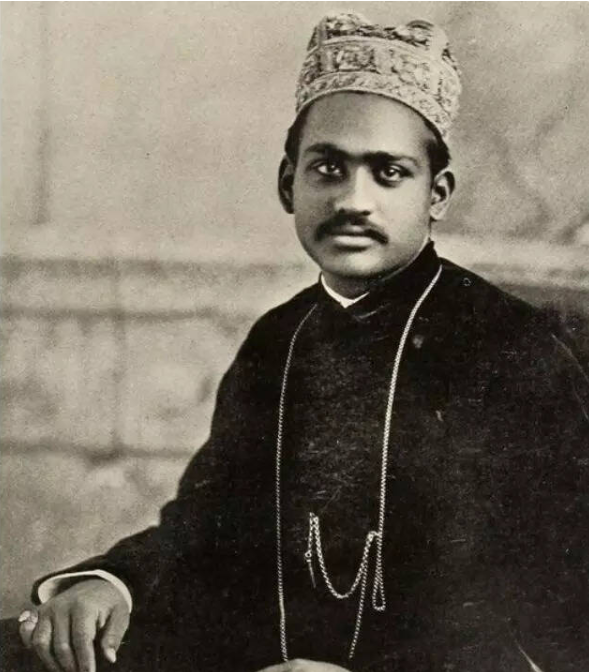
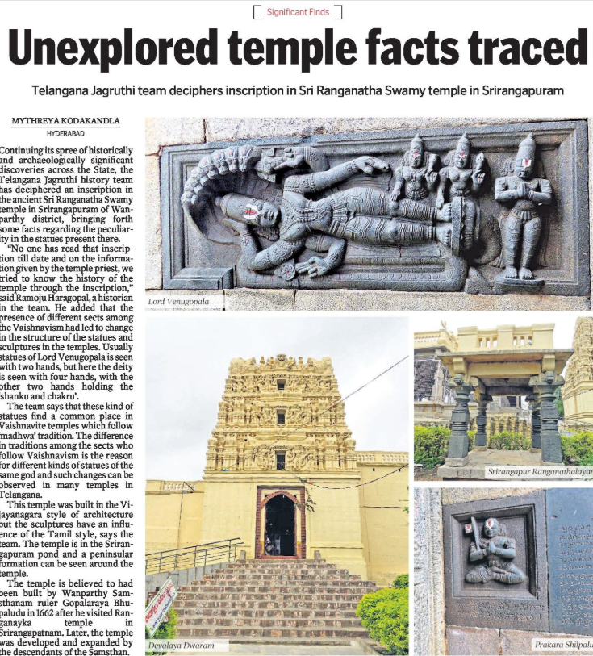
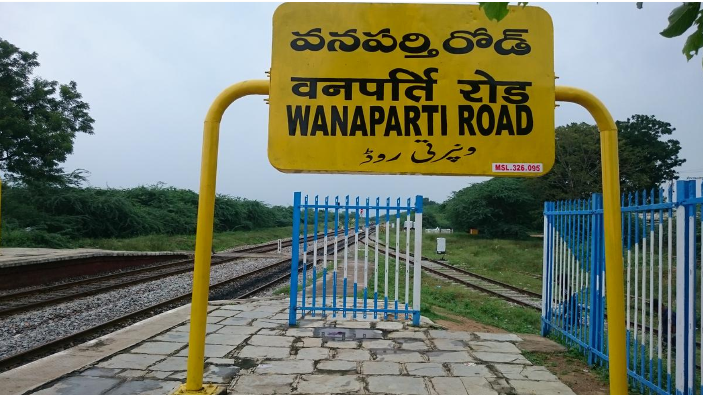

Wanaparthy is a town in the Wanaparthy district of Telangana, India. Wanaparthy Samsthanam was founded in 1512 AD, after the Kakatiya kingdom declined. In 1817 AD, the Suguru estate's capital was transferred to Wanaparthy Province in 1817 AD[4]
Wanaparthy Spanning 11,319.83 hectares (27,970 acres), this reserve forest, akin to a small national park, safeguards biodiversity, protects ecosystems, and acts as a vital carbon sink, preserving wildlife and natural resources.
Wanaparthy was governed by a feudal ruler, Rameshwar Rao II titled Raja of Wanaparthy as vassal of the Nizam of Hyderabad. Wanaparthy was one of the 14 major Zamindari segments in Telangana in post-independent India. Raja died on 22 November 1922. As his successor, Krishna Dev was a minor; his estate was managed by the court as his ward. Krishna Dev died before attaining adulthood, and the crown passed on to his son, Rameshwar Rao III. Soon after, India abolished all regal titles. Suravaram Pratapareddy entered politics from the Indian National Congress at the end of his life and was elected to the Hyderabad State Legislative. He won the first general election, and he became the first M.L.A. from Wanaparthy in 1952.
After the formation of the Telangana government, Wanaparthy is proposed as a district along with the other 14 new district proposals to the new government apart from the 10 existing districts. Wanaparthy District was formed in 2016 when Telangana was reorganized. It was created from parts of the former Mahabubnagar District.
The late Sri Raja Rameshwar Rao of Wanaparthy established K.D.R. Government Polytechnic College (KDRGP Wanaparthy), which was launched by India's first Prime Minister, Pandit Jawahar Lal Nehru, on the auspicious day of Vijay Dashimi on October 11, 1959, the first Polytechnic College in the state[5] Revanth Reddy, 2nd Chief Minister of Telangana due to political consciousness learned in Wanaparthy.[6]
The Wanaparthy Samsthanam was one of the three key vassal states under the Nizam of Hyderabad, playing a crucial role in the prosperity and development of the Princely State of Hyderabad. Actor Aditi Rao Hydari and film director and screenwriter Kiran Rao are descendants of the Wanaparthy royal family.


Rajiv Gandhi International Airport is only 131 km from the city
The city has nearest railway station in serving, with the presence of Wanaparthy road railway station near by 29 km from the Wanaparthy Town
| Mandal Name | Major Villages |
|---|---|
| Wanaparthy | Kadukuntla, Konnur, Srinivaspur, Anajpur, Dupalli |
| Kothakota | Kothakota, Appaipally, Boothpur |
| Pebbair | Pebbair, Gopalpet, Rangapur |
| Atmakur | Atmakur, Balijapally, Motlampally |
| Amarchinta | Amarchinta, Singampet, Nandimalla |
| Srirangapur | Srirangapur, Venkatapur, Kistampally |
| Pangal | Pangal, Chinnambavi, Maredpally |
| Veepanagandla | Veepanagandla, Govindapur, Vallabhapur |
| Total Mandals | 14 |
|---|---|
| Total Villages | Approx. 255 |
| Nearby Districts | Mahabubnagar, Gadwal, Nagarkurnool |
| State | Telangana |
| Country | India |